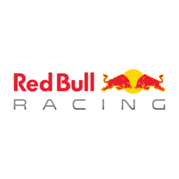

Campeonato Mundial de Fórmula 1 2025 - FIA

Classificação Geral dos Pilotos
| Piloto |
Nacionalidade |
Pontos |
| Lando Norris | 🇬🇧 GBR | 43 |
| George Russell | 🇬🇧 GBR | 30 |
| Oscar Piastri | 🇦🇺 AUS | 27 |
| Max Verstappen | 🇳🇱 HOL | 30 |
| Kimi Antonelli | 🇮🇹 ITA | 10 |
Resultado por Etapa
GP da Austrália
| Posição | Piloto | Pontos |
|---|
| 1 | Lando Norris | 25 |
| 2 | Max Verstappen | 18 |
| 3 | George Russell | 15 |
GP da China
| Posição | Piloto | Pontos |
|---|
| 1 | Oscar Piastri | 25 |
| 2 | Lando Norris | 18 |
| 3 | George Russell | 15 |
Classificação das Equipes
| Equipe |
Pontos |
| McLaren | 70 |
| Mercedes | 40 |
|  Red Bull Racing | 30 |
Sistema de Pontuação
| Posição | Pontos |
|---|
| 1º | 25 |
| 2º | 18 |
| 3º | 15 |
| 4º | 12 |
| 5º | 10 |
| 6º | 8 |
| 7º | 6 |
| 8º | 4 |
| 9º | 2 |
| 10º | 1 |
Autores:
Enzo Vanin RA:60009323
Luigi Gabriel RA:60008940